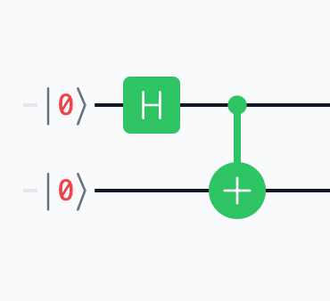

量子もつれ
量子ビットの間にリンクを作る
CNOT ゲートの説明で作った量子回路量子もつれ状態を作る最も単純な量子回路は、実は量子もつれと呼ばれる量子ビットの状態を作っています。 量子もつれは重ね合わせ状態と同じく、古典ビットにはなく量子ビットだけが取れる状態で、QPU での計算に欠かせない強力な道具の 1 つです。
この量子もつれ状態でビット 1 のみを測定すると、1 ビット測定のルールに従って 50% の確率で 0、残り 50% の確率で 1 が得られます。 もし 0 が得られた場合、ビット
2 は測定しなくても 0 であることが確定しています。 なぜならば、元々の重ね合わせは |0⟩
または |3⟩ (2 進数で表すと |00⟩ または |11⟩) だったので、ビット 1 が 0
だった場合にはビット 2 も 0 (|00⟩) であることが自動的に分かるからです。
同様に、もし先にビット 2 を測定した場合も、その結果によってビット 1 の値が確定します。
これは、ビット 1 とビット 2 の間に見えないリンクが生まれていることを意味します。 たとえば量子ビット 2 つがそれぞれおはじきくらいの大きさのチップに埋め込まれているとして、上の回路でもつれさせたあと測定せずにアリス、ボブの 2 人で 1 つずつ持ったとします。 そしてアリスは島根県、ボブは岐阜県へバスで移動します。 何百キロも離れている 2 人ですが、2 つの量子ビットはもつれたままの状態にあります。 ここで島根県のアリスが自分の量子ビットを測定して 0 が出たとします。 次にボブが岐阜県で自分の量子ビットを測定すると、(アリスの結果と同じ) 必ず 0 が出ます。 このように、どんなに離れていても測定結果が連動するというのが量子もつれの特徴の 1 つです。
この不思議な遠隔作用は、あのアインシュタインを始めとする 20 世紀初期の物理学者達を大いに悩ませました。 しかし、本チュートリアルではこれを「量子ビットがもともと持つ性質」としてそのまま受け入れることとします。 つまり、量子力学や哲学的な深い洞察は避け、量子ビットのいち機能として使っていきます。
このように量子もつれは、異なる量子ビットの値を連動させることで、いわば一度の操作でたくさんの量子ビットの値を操作できるようにするものです。 これを量子重ね合わせと組合わせることで、QPU は初めてその威力を発揮します。 これから紹介していく量子アルゴリズムはすべて、量子もつれと重ね合わせを組合わせたものです。